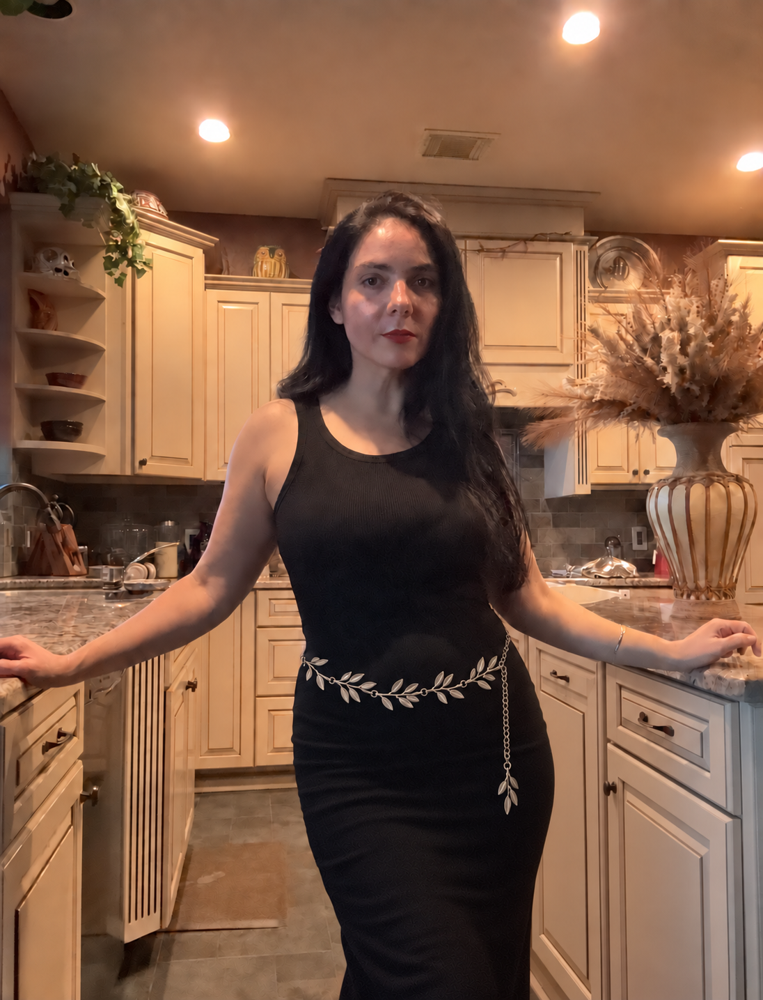

THE BEGINNING
Built to bring order to the chaos.

U.S. Army Veteran · Mother
Education: Psychology · Cybersecurity
I am a mother, a United States veteran, and a psychology graduate. As a parent, I wanted better tools to help families manage the many moving pieces of education while also giving children the structure, encouragement, and independence they need to thrive.
I became especially aware of how important thoughtful organization and flexibility can be for families supporting children with ADHD, autism, and other learning differences. Every child learns differently, yet parents are often expected to piece together schedules, resources, communities, activities, and support systems across countless disconnected places.
Homeschooling can offer extraordinary freedom, but that freedom can also feel isolating. Resources are scattered. Communities are fragmented. Finding classes, friendships, support, and practical tools can require an enormous amount of work.
“It takes a village.”
Yet many families are still left trying to build that village entirely on their own.
THE PHILOSOPHY
Learning through curiosity, dialogue, and experience.
I also want Liberi Curiosi to help revive something ancient: the idea that education is not simply the delivery of information from one person to another.
Inspired by the Socratic tradition, I believe learning happens through questions, conversation, experience, observation, and the exchange of ideas. A child is not merely a recipient of knowledge, and a teacher is not its only source.
Parents, children, educators, and members of a community all carry experiences, skills, perspectives, and questions worth sharing.
We all have something to teach, and we all have something to learn.
Curiositas
Ask questions. Wonder deeply. Remain open to what you do not yet know.
Experientia
Learn through doing, observing, exploring, and encountering the world.
Dialogus
Exchange ideas, challenge assumptions thoughtfully, and learn through conversation.
Communitas
Build connections where families can support, teach, and learn from one another.
BUILDING THE VILLAGE
From searching for the village I needed. To building one we can share.
I created Liberi Curiosi and Collegium to bring these ideas together: to give families a more connected place to organize learning, encourage independence, find community, exchange knowledge, celebrate their children’s accomplishments, and support one another.
These programs began as tools I wanted for my own family. My hope is that they can become tools that make another family’s path a little easier, more connected, and more joyful—and perhaps help us rediscover that education does not have to happen alone.
LIBERI CURIOSI